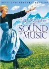
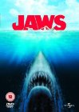
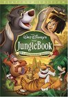
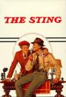
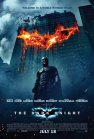
, and I pretty much don't care for the whole South society and mindset as conveyed. So the whole requiem for the society now \"gone with the wind\" had no appeal to me.
<br><br>
<i>Second Half</i><br>
I think the second half of the movie could have stood just fine without the first half. And I think it was a great movie. Scarlett did become an interesting tragic character. A note on two of the big quotes from the movie. The final line that \"tomorrow is another day\" seems like a stupid subversion of what should have been the last line only a minute earlier: \"Frankly my dear, I don't give a damn.\"")


 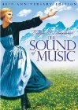
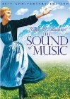 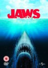
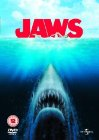 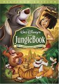
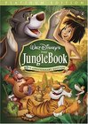

 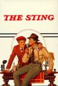
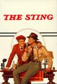 is incredibly attractive in this. I'm tempted to watch the remake someday to see how if Keira Knightley can compare in the role.")


 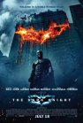
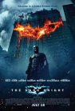